診療方針
当院では、患者様が納得出来るよう、わかりやすい説明、丁寧な診察、診療をモットーに親切で心のこもった医療サービスを心がけています。
基本情報
| 医院名 | やましたクリニック |
|---|---|
| 電話 | 042-569-7555 |
| 住所 | 〒190-0033 東京都 立川市 一番町2-36-5-3F |
| 診療項目 | 内科、循環器内科、外科、皮膚科、形成外科 |
診療時間
| 月 | 火 | 水 | 木 | 金 | 土 | 日 | 祝 | |
|---|---|---|---|---|---|---|---|---|
| 9:00～12:00 | ● | ● | ● | ／ | ● | ● | ／ | ／ |
| 15:00～18:00 | ● | ● | ● | ／ | ● | ／ | ／ | ／ |
※受付は30分前から行っております。予約制ではありません。
※当院受診時、高校生までは保護者同伴でご来院下さい。当院での内科診察は高校生からとなります。
※清水先生（甲状腺専門外来）については完全予約制です。ご予約はお電話にてお問い合せください。
甲状腺外来の診察時間は、午前9:00～12:00 午後14:30～17:00となっております。
設備紹介
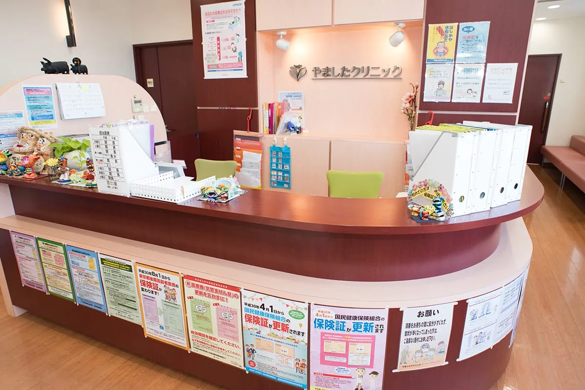
受付
こちらで診察の受付、様々な掲示等を行っております。皆様を親切・笑顔でお待ちしております。どうぞお気軽にお越しください。
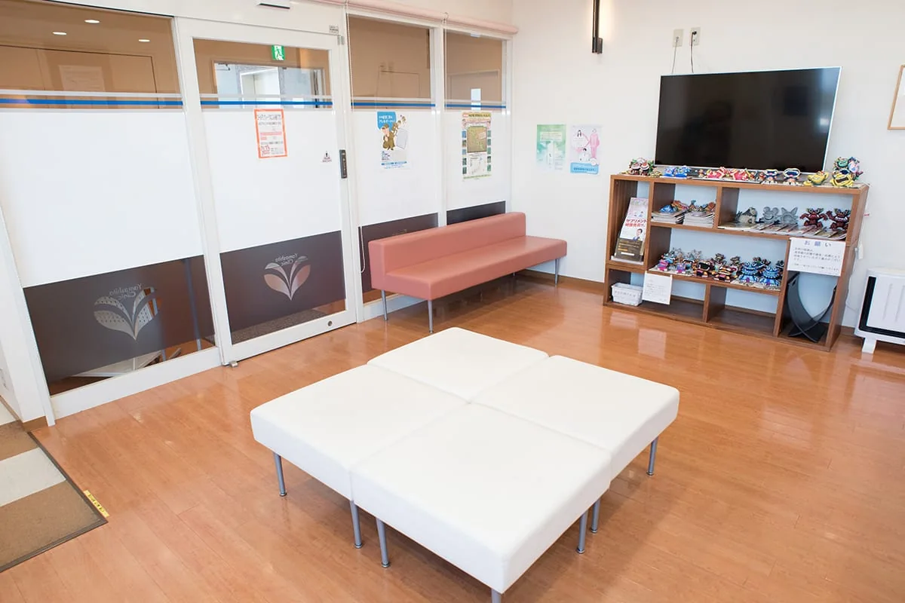
待合室
明るく清潔な状態に保つように心がけております。少しお待たせすることがあるかもしれませんが、雑誌等を揃えておりますので、リラックスしてお待ちいただければと思います。
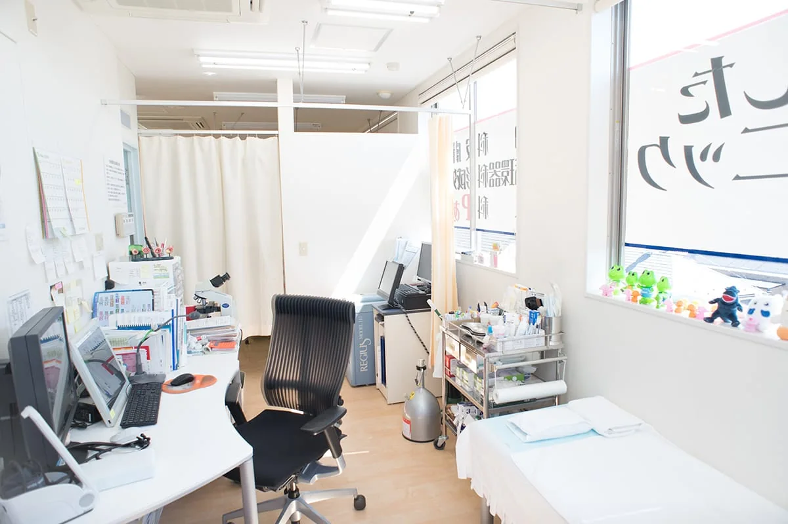
診察室
当院の診察室です。明るく清潔に、痛い・怖いというイメージの無いように心がけています。
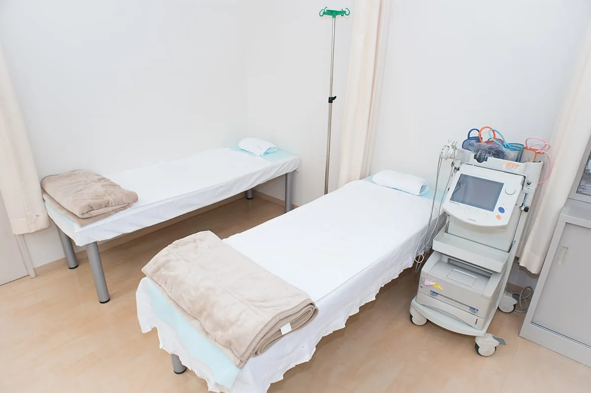
処置室
当院の処置室です。
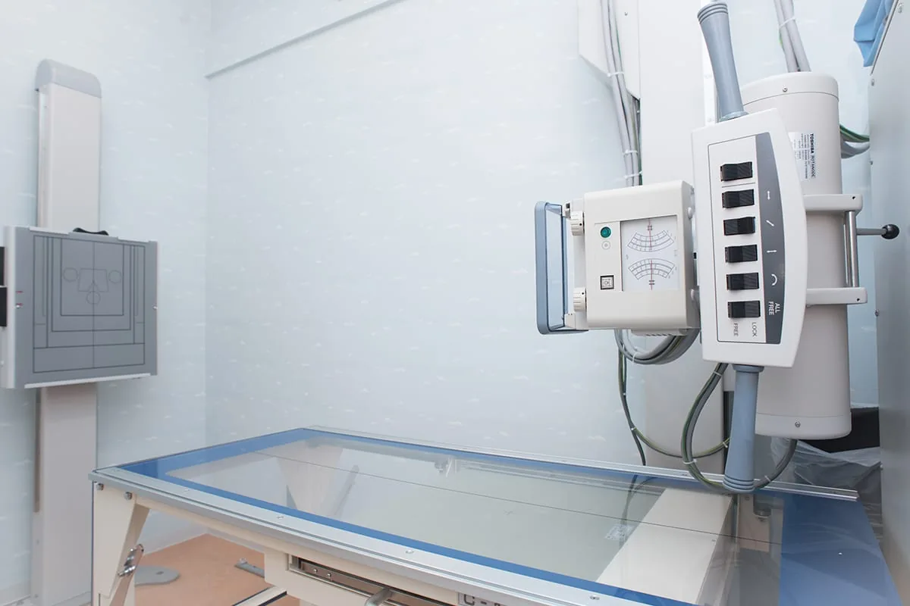
レントゲン室
当院のレントゲン室です。
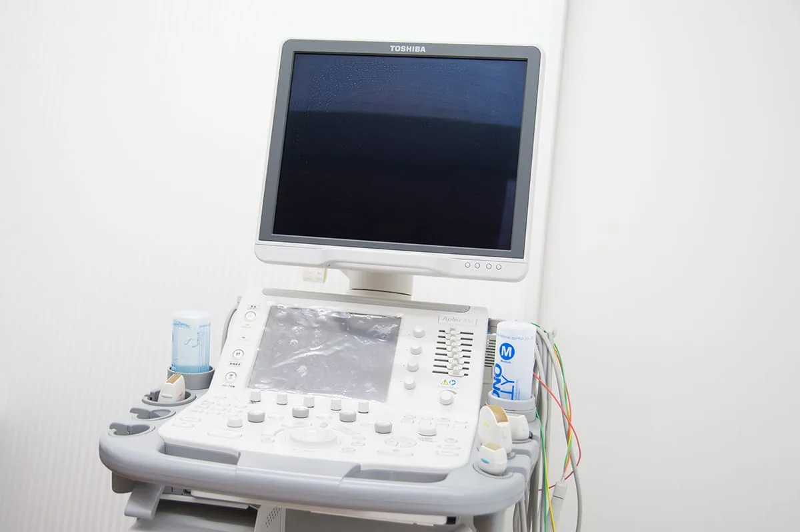
超音波診断装置
超音波診断装置を設置しております。この検査では、超音波で体内のいろいろな臓器の形態診断や、血液の流れる方向・速度を測定し、その情報をモニターに表示することができます。特にこの装置はフルデジタル回路を採用していますのでよりクリアな画像をカラーでみることができます。
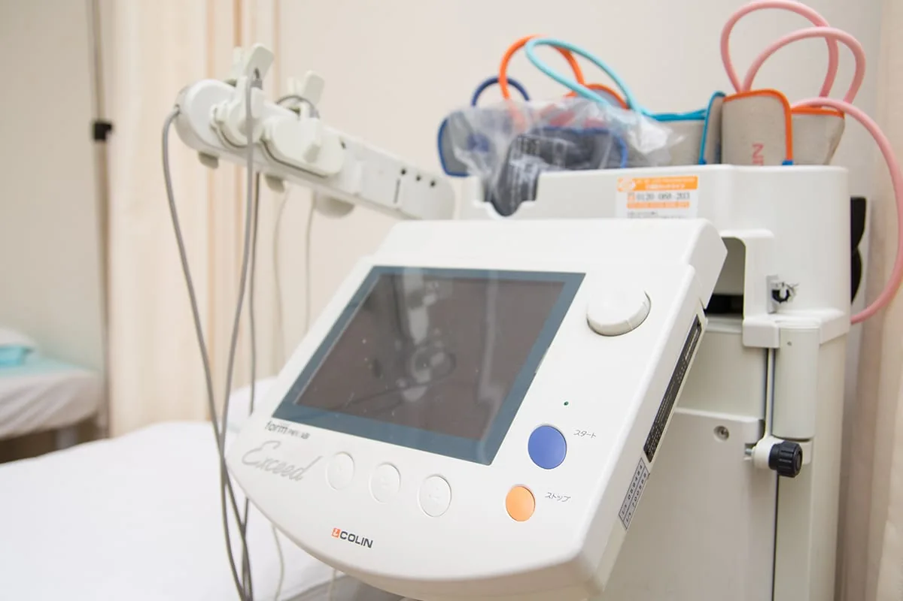
血圧脈波検査装置
下肢動脈の狭窄・閉塞の重症度評価や、動脈硬化の測定が簡単にできます。
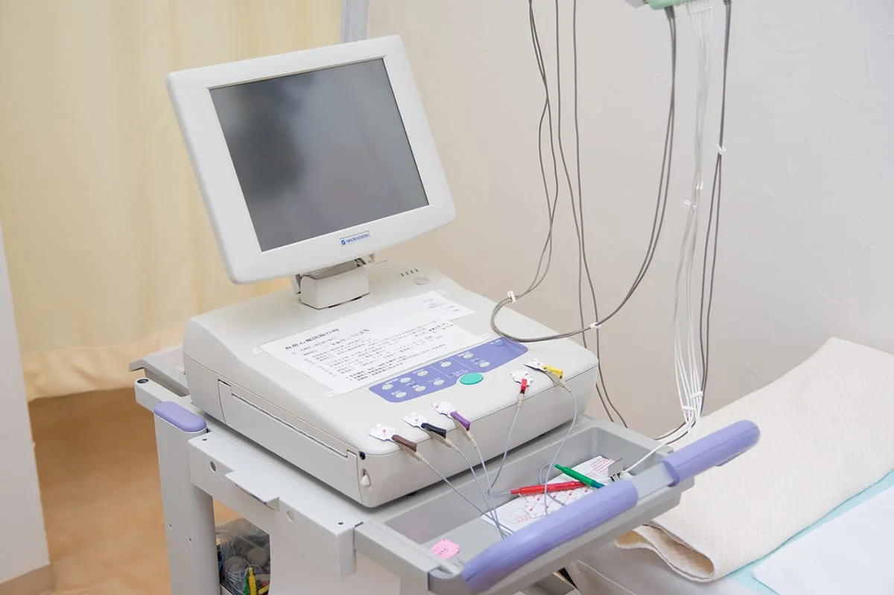
心電図
心電図です。心臓の検査の中で基本的な検査で、狭心症などの心臓の異状・疾患の早期発見につながります。
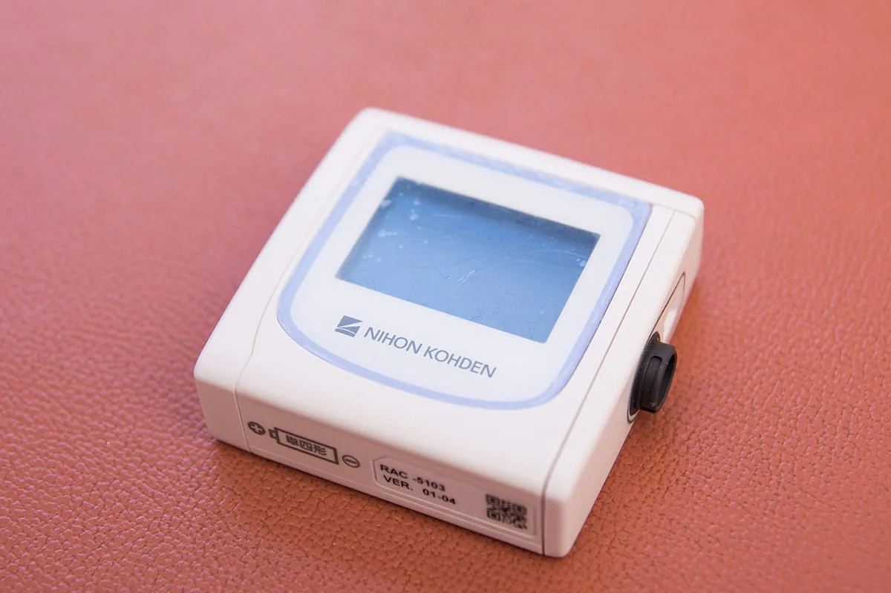
長時間心電図記録器
ホルターレコーダを装着したままでシャワーを浴びることができるので、「入浴できない」という負担を軽減できます。
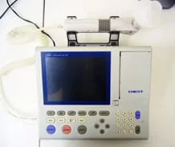
スパイロメータ
自覚症状に頼らず、数値で同性・同年代と比較して自分の肺の健康状態が把握できます。
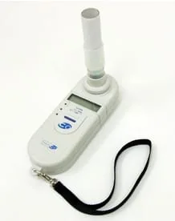
マイクロ CO モニター
呼気中の一酸化炭素濃度をセンサーにて検知し、その濃度を測定する装置です。
診療施設および検査機器
- 電子カルテシステム
- レントゲン装置
- デジタルX線画像診断システム
- 超音波画像診断装置（心臓、腹部、血管、乳腺、甲状腺）
- 心電計、ホルター心電計
- 血圧脈波検査装置
- スパイロメーター（呼吸機能検査装置）
- マイクロCOモニター